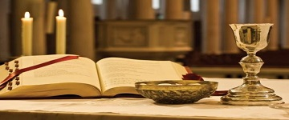

<!DOCTYPE php>
 <php lang="en">
	 <head>
		 <meta charset="utf-8" />
		 <meta name="viewport" content="width=device-width, initial-scale=1.0" />
		 <meta name="description" content="World first Church to St. Therese - Kandanvilai (Estd. 1923)" /><!--Interior-Design-Responsive-Website-Templates-Edge-->
		 <meta name="author" content="webThemez.com" />
		 <meta name="keywords" content="top 5 places to visit in kanyakumari, kanyakumari, top things to do in kanyakumari district, limit search to kanyakumari District, kandanvilai, kandanvilai church, kandanvilai village, kandanvilai parish, Places To Visit In Kanyakumari, Kanyakumari has many tourist places to visit, list of the best places one can visit in Kanyakumari, Have a look at these 10 best tourist places in Kanyakumari, kanyakumari district churches, catholic churches in kanyakumari district, Churches in Kanyakumari, tourist places in kanyakumari, famous churches in kanyakumari district, famous places in kanyakumari district, important places in kanyakumari, important places in kanyakumari district, places to visit in the district of Kanyakumari, top places in kanyakumari, kanyakumari places to visit, places to visit near nagercoil, places to visit near colachel, places to visit near thuckalay, places to visit near monday market, Places to Visit near around colachel, kanyakumari district churches, list of churches in kanyakumari diocese, list of catholic churches in kanyakumari diocese, st.therese churches in kanyakumari, theresa churches in kanyakumari, kuzhithurai diocese churches, catholic churches in kanyakumari, list of st.therese churches, list of st.theresa churches, list of st.therese of child jesus churches, list of st.therese of child jesus churches, Notable Churches under the Diocese of kuzhithurai, catholic churches in kanyakumari district, catholic churches of kanyakumari district, what are the places to visit in kanyakumari district, what are the important places to visit in kanyakumari district, what are the places to visit in kanyakumari, what are the important places to visit in kanyakumari, kanyakumari map, catholic church websites" />
		 <title>MNC : Home </title>
		 <link rel="favicon" href="assets/images/favicon.png" />
		 <link rel="shortcut icon" href="favicon.ico" type="image/x-icon" />
		 <link rel="stylesheet" media="screen" href="../fonts.googleapis.com/css_c5f925f2.css" />
		 <link rel="stylesheet" href="assets/css/bootstrap.min.css" />
		 <link rel="stylesheet" href="assets/css/font-awesome.min.css" />
		 <link rel="stylesheet" href="assets/css/bootstrap-theme.css" media="screen" /> 
		 <link rel="stylesheet" href="assets/css/style.css" />
		 <link rel='stylesheet' id='camera-css' href='assets/css/camera.css' type='text/css' media='all' />
		 <link rel="stylesheet" type="text/css" media="all" href="assets/lightbox/css/jquery.lightbox-0.5.css" />
		 <script type="text/javascript" src="assets/lightbox/js/jquery-1.10.1.min.js"></script>
		 <script type="text/javascript" src="assets/lightbox/js/jquery.lightbox-0.5.min.js"></script>
	 </head>
	 <body>
		 <div class="navbar navbar-inverse">
			 <div class="container">
				 <div class="navbar-header">
					 <button type="button" class="navbar-toggle" data-toggle="collapse" data-target=".navbar-collapse"><span class="icon-bar"></span><span class="icon-bar"></span><span class="icon-bar"></span></button>
					 <a class="navbar-brand" href="index.php.html"></a>
				 </div>
				 <!DOCTYPE php>
	 <script src="../ajax.googleapis.com/ajax/libs/jquery/1.10.2/jquery.min.js"></script>
	 <script>
		var $j = jQuery.noConflict();
		$j(document).ready(function(){
			var pageName = location.href.split("/").slice(-1);
			if (pageName == "" || pageName == "index.php.html")
			{
				$('#homePage').addClass('active');
			}
			else if (pageName == "ancient-history.php.html" || pageName =="our-church.php.html" || pageName =="about-therese.php.html" || pageName =="sttherese-churches-in-india.php.html" || pageName =="rosary-hill.php.html")
			{
				$('#about').addClass('active');
			}
			else if (pageName == "parish-priests.php.html" || pageName == "sons-of-soil-priests.php.html" || pageName == "sons-of-soil-nuns.php.html")
			{
				$('#priestsAndNuns').addClass('active');
			}
			else if (pageName == "associations.php.html")
			{
				$('#piousAssociation').addClass('active');
			}
			else if (pageName == "documentary-video.php.html" || pageName =="church-altar-photos.php.html" || pageName =="festival-videos.php.html" || pageName =="festival-photos.php.html" || pageName =="car-photos.php.html" || pageName =="flagstaff-photos.php.html" || pageName =="church-photos.php.html" || pageName =="steeple-photos.php.html" || pageName =="other-photos.php.html" || pageName =="rosaryhill-photos.php.html" || pageName =="topview-photos.php.html")
			{
				$('#galleryPage').addClass('active');
			}
			else if (pageName == "parish-council.php.html")
			{
				$('#parishCouncil').addClass('active');
			}
			else if (pageName == "contact.php.html")
			{
				$('#contactPage').addClass('active');
			}
		});
	</script>
	 <div class="navbar-collapse collapse">			
		 <ul class="nav navbar-nav pull-right mainNav">
			 <li id="homePage"><a href="index.php.html">Home </a></li>
			 <li id="about" class="dropdown"><a href="#" class="dropdown-toggle" data-toggle="dropdown">About <b class="caret"></b></a>
				 <ul class="dropdown-menu">
					 <li><a href="ancient-history.php.html">About Us </a></li>
					 <li><a href="our-church.php.html">Our Church </a></li>
					 <li><a href="about-therese.php.html">St.Therese </a></li>
					 <li><a href="sttherese-churches-in-india.php.html">St.Therese Churches in India </a></li>
					 <li><a href="rosary-hill.php.html">Rosary Hill </a></li>
				 </ul>
			 </li>
			 <li id="priestsAndNuns" class="dropdown">
				 <a href="#" class="dropdown-toggle" data-toggle="dropdown">Priests & Nuns  <b class="caret"></b></a>
				 <ul class="dropdown-menu">
					 <li><a href="parish-priests.php.html">Parish Priests </a></li>
					 <li><a href="sons-of-soil-priests.php.html">Sons of Soil - _______ </a></li>
					 <li><a href="sons-of-soil-nuns.php.html">Sons Of Soil - ____ </a></li>
				 </ul>
			 </li>
			 <li id="piousAssociation"><a href="associations.php.html">Associations </a></li>
			 <li id="galleryPage" class="dropdown"><a href="#" class="dropdown-toggle" data-toggle="dropdown">Gallery <b class="caret"></b></a>
				 <ul class="dropdown-menu">
					 <li><a href="documentary-video.php.html">Documentary Videos </a></li>
					 <li><a href="church-altar-photos.php.html">Church Altars </a></li>
					 <li><a href="festival-videos.php.html">Festival Videos </a></li>
					 <li><a href="festival-photos.php.html">Festival Photos </a></li>
					 <li><a href="car-photos.php.html">Church Cars </a></li>
					 <li><a href="flagstaff-photos.php.html">Church Flagstaff </a></li>
					 <li><a href="church-photos.php.html">Church Photos </a></li>
					 <li><a href="steeple-photos.php.html">Church Steeple </a></li>
					 <li><a href="other-photos.php.html">Other Photos </a></li>
					 <li><a href="rosaryhill-photos.php.html">Rosary Hill </a></li>
					 <li><a href="topview-photos.php.html">Top Views </a></li>
				 </ul>
			 </li>
			 <li id="parishCouncil"><a href="parish-council.php.html">Parish Council </a></li>
			 <li id="contactPage"><a href="contact.php.html">Contact </a></li>
			 <li><a href="tamil/index.php.html" title="இணையதளத்தை தமிழில் படிக்க...">தமிழ் </a></li>
			 <li id="liveLink"><a href="https://www.youtube.com/c/StThereseChurchKandanvilai/live" title="Click here to watch the live" target="blank" class="blinking">Live </a></li>
		 </ul>
	 </div>	
 </div></div></body></php>			 </div> 
		 </div> 
		 <header id="head">	
			 <div class="container">			
				 <div class="fluid_container">
					 <div class="camera_wrap camera_emboss pattern_1" id="camera_wrap_4">
						 <div data-thumb="assets/images/slides/thumbs/liveslide1.png" data-src="assets/images/slides/liveslide1.png"></div>
						 <div data-thumb="assets/images/slides/thumbs/slides1.png" data-src="assets/images/slides/slides1.png"></div>
						 <div data-thumb="assets/images/slides/thumbs/slides2.png" data-src="assets/images/slides/slides2.png"></div>
						 <div data-thumb="assets/images/slides/thumbs/slides3.png" data-src="assets/images/slides/slides3.png"></div>
						 <div data-thumb="assets/images/slides/thumbs/slides4.png" data-src="assets/images/slides/slides4.png"></div>
						 <div data-thumb="assets/images/slides/thumbs/slides5.png" data-src="assets/images/slides/slides5.png"></div>
						 <div data-thumb="assets/images/slides/thumbs/slides6.png" data-src="assets/images/slides/slides6.png"></div>
						 <div data-thumb="assets/images/slides/thumbs/slides6.png" data-src="assets/images/slides/slides7.png"></div>
					 </div>
				 </div>
			 </div>
		 </header>
		 <section class="news-box top-margin">
			 <div class="container">
				 <h2><span>Welcome to the official _______ of St.Therese Church, Kandanvilai - thank you for visiting! <h4 id="currentDate"></h4></span></h2>			
				 <div class="row">
		   
					 <div class="col-lg-4 col-md-4 col-sm-12">
						 <div class="newsBox">
							 <div class="thumbnail">
								 <figure><a href="mass-schedules.php.html" alt=""></a></figure>
								 <div class="caption maxheight2">
									 <div class="box_inner">
										 <div class="box">
											 <p class="title"><strong>MASS SCHEDULES </strong></p>
											 <center><p>											
											 <u>Daily Holy Mass </u><br />( <b> Morning 6:15 AM, </b> (IST) except Thursdays ) <br /><br />
											 <u>Thursday Novena Holy Mass </u><br />( <b> Evening 6:15 PM,  </b>IST )  <a href="https://www.youtube.com/c/StThereseChurchKandanvilai/live" target="blank" title="Novena Holy Mass Live">LIVE! </a><br />
											 <u>Sunday Holy Mass </u><br />( <b> Morning 7:00 AM,  </b>IST )  <a href="https://www.youtube.com/c/StThereseChurchKandanvilai/live" target="blank" title="Sunday Holy Mass Live">LIVE! </a></p></center>
										 </div>
										 <div>
											 <a href="mass-schedules.php.html" class="btn-inline">read more </a>
										 </div>
									 </div>
								 </div>
							 </div>
						 </div>
					 </div>
					 <div class="col-lg-4 col-md-4 col-sm-12">
						 <div class="newsBox">
							 <div class="thumbnail">
								 <figure><a href="associations.php.html" alt=""></a></figure>
								 <div class="caption maxheight2">
									 <div class="box_inner">
										 <div class="box">
											 <p class="title"><strong>ASSOCIATIONS </strong></p>
											 <p>Click below to get ____ details of Associations </p>
										 </div>
										 <div>
											 <a href="associations.php.html" class="btn-inline">read more </a>
										 </div>
									 </div>
								 </div>
							 </div>
						 </div>
					 </div>
					 <div class="col-lg-4 col-md-4 col-sm-12">
						 <div class="newsBox">
							 <div class="thumbnail">
							 <div id="liveButton" class="liveIconPosition"><a href="https://www.youtube.com/c/StThereseChurchKandanvilai/live" target="blank" title="Thursday and Sunday Holy Masses will be Live streamed!"><div class="setupLiveIcon"></div></a></div>
								 <figure><a href="news.php.html" alt=""></a></figure>
								 <div class="caption maxheight2">															
									 <div class="box_inner">																
										 <div class="box">
											 <p class="title"><strong>NEWS & EVENTS </strong></p>
											 <div class="list styled custom-list">
												 <ul>
													 <center><li>Dear visitors! <br />
														Currently, every Thursday and ______ Mass is live streamed __ our Church YouTube channel. _____ who are unable to ______ the Church worship events __ person, are kindly requested __ use this opportunity and ___________ in the worship event. <br />Thank you!
													 <marquee height="150px;" behavior="scroll" loop="infinit" scrolldelay="300" direction="up" onmouseover="this.stop();" onmouseout="this.start();">
													 </marquee>
												 </li></center></ul>
											 </div>
										 </div>
									 </div>
								 </div>
							 </div>
						 </div>
					 </div>
				 </div>
			 </div>
		 </section>
		 <div class="container">
			 <div class="modal fade" id="myModal" role="dialog">
				 <div class="modal-dialog">
					 <div class="modal-content">
						 <div class="modal-header">
							 <button type="button" class="close" data-dismiss="modal">&times; </button>
							 <h4 class="modal-title">A service note of ______ Most.Rev. Maria Benzigar about ___________ Church </h4>
						 </div>
						 <div class="modal-body">
							 <p>This is a service ____ of Bishop,  <b>Most.Rev. Aloysius Maria Benzigar </b> (Diocese of Quilon) _____ stated that Kandanvilai Church __ the first Church which __ dedicated to St. Therese _____ her Beatification on, 1923. ______  <a href="bishopletter.pdf" title="Service note of, Bishop. Aloysius Maria Benzigar" class="btn-inline" target="blank">click here </a> to read the ________. </p>
							 <object data="bishopletter.pdf" type="application/pdf"></object>
						 </div>
						 <div class="modal-footer">
							 <button type="button" class="btn btn-default" data-dismiss="modal">Close </button>
						 </div>
					 </div>
				 </div>
			 </div>
		 </div>
		 <section class="container">
			 <div class="row">
				 <div class="col-md-4"><div class="title-box clearfix "><h2 class="title-box_primary">The Ancient History </h2></div> 
					 <p><span>Kandanvilai Church is the  <a href="#" data-toggle="modal" data-target="#myModal" class="btn-inline">first Church </a> which is dedicated __ St. Therese after she _________ on, 1923. </span></p>
					 <p> The ancient history __ Kandanvilai Church is described __ a recently developed and ________  <a href="http://kandanvilaichurch.blogspot.com/p/st.html" alt="" title="Watch the Kandanvilai Church documentary." class="btn-inline" target="_blank">documentary </a>. It covers, the ____ history of St. Therese ___ along the Kandanvilai parish __ well. </p>
					 <a href="ancient-history.php.html" title="read more" class="btn-inline" target="_self">read more </a>
				 </div>
		  
				 <div class="col-md-4"><div class="title-box clearfix "><h2 class="title-box_primary">Welcome from Parish Priest </h2></div> 
					 <blockquote class="blockquote-1">
						 <p><b>Welcome to our Church _______! </b></p>
						 <p>We would like to ___ in touch with more ________ in India which are _________ to Saint Therese. If ___ know such a kind __ Church(s), we kindly request ___ to inform them at <b> info@thereseofkandanvilai.info </b>. Thanking you! </p>
						 <small>Rev.Fr. W. Sahaya Justus (______ Priest)	 <cite title="Source Title"></cite></small>
					 </blockquote>
				 </div>
				 <div class="col-md-4"><div class="title-box clearfix "><h2 class="title-box_primary">Parish Council </h2></div> 
					 <p><span>Kandanvilai parish solely based __ the whole hearted dedication __ the parish priests and __-_________ of the parish people. </span></p>
					 <a href="parish-council.php.html" title="read more" class="btn-inline" target="_self">read more </a>
				 </div>
			 </div>
		 </section>
		 <footer id="footer">
	 <div class="container">
		 <div class="social text-center">
			 <a href="http://www.fb.me/thereseofkandanvilai" alt="" target="blank"><i class="fa fa-facebook"></i></a>
			 <a href="https://www.youtube.com/c/StThereseChurchKandanvilai" alt="" target="blank"><i class="fa fa-youtube"></i></a>
		 </div>		
		 <div class="clear"></div>
	 </div>
	 <div class="footer2">
		 <div class="container">
			 <div class="row">
				 <div class="col-md-6 panel">
					 <div class="panel-body">
						 <p class="simplenav">
							 <a href="index.php.html">Home </a> | 
							 <a href="sttherese-churches-in-india.php.html">Churches </a> |
							 <a href="rosary-hill.php.html">Rosary Hill </a> |
							 <a href="mass-schedules.php.html">Mass Timings </a> |
							 <a href="associations.php.html">Associations </a> |
							 <a href="contact.php.html">Contact </a>
						 </p>
					 </div>
				 </div>
				 <div class="col-md-6 panel">
					 <div class="panel-body">
						 <p class="text-right">Copyright &copy; 2024. All right reserved. Template by <a href="index.html" rel="develop">Our Lady of Good Health</a></p>
					 </div>
				 </div>
			 </div>
		 </div>
	 </div>
 </footer>		 <script src="assets/js/modernizr-latest.js"></script> 
		 <script type='text/javascript' src='assets/js/jquery.min.js'></script>
		 <script type='text/javascript' src='assets/js/fancybox/jquery.fancybox.pack.js'></script>
		 <script type='text/javascript' src='assets/js/jquery.mobile.customized.min.js'></script>
		 <script type='text/javascript' src='assets/js/jquery.easing.1.3.js'></script> 
		 <script type='text/javascript' src='assets/js/camera.min.js'></script>
		 <script type="text/javascript" src="assets/js/common/generic.js"></script>
		 <script src="assets/js/bootstrap.min.js"></script> 
		 <script src="assets/js/custom.js"></script>
		 <script>
			jQuery(function(){
				jQuery('#camera_wrap_4').camera({
					height: '600',
					loader: 'bar',
					pagination: false,
					thumbnails: false,
					hover: false,
					opacityOnGrid: false,
					imagePath: 'assets/images/'
				});
			});
		</script>
	 
 